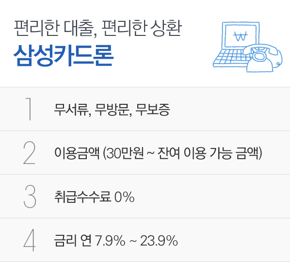

- 계약을 체결하기 전에 자세한 내용을 확인해 주시기 바랍니다.
- 상담가능시간 : 평일 오전 8시~오후 11시 주말 및 공휴일 오전 9시~오후 6시 (상담가능시간 외 신청시 다음날 전화드립니다.)
- 이자율 : 연 7.9%~23.9%
- 연체이자율 : 연 21.0%~29.9%(회원별, 연체기간별, 이용상품별 차등 적용)
- 삼성카드론 이용 전에 상품설명서, 홈페이지, 약관을 통해 자세한 이용조건을 확인해 주시기 바랍니다.
- 과도한 빚, 고통의 시작입니다.
- 이자 외, 별도의 중개수수료를 수취하는 것은 불법입니다.
- 준법감시심의필 M3526-13-915 (심의일자 : 2013-9-17)